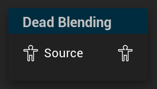

Dead Blending
Processes inertial blending requests from previous nodes
UAnimGraphNode_DeadBlending
FAnimNode_DeadBlending

Offers an alternative way to blend between animations, instead of the default crossfade, by tracking bone velocities and letting them carry over into the blend. Optionally a blend profile can be used as well.
By default, AnimCurves will be dead blended as well, but the node allows specific curves to be filtered out by name. Filtered AnimCurves will then instantly change values instead of being dead blended. The Dead Blending node also allows a list of bones to be filtered out by bone reference to be configured. These filtered bones will, just like filtered AnimCurves, transition poses instantly, instead being dead blended.
Instead of regular Inertialization though, dead blending is able to dampen the blend to the expected range and avoid breaking joints due to high bone velocities like inertialization can. This can make it more desirable over the default inertialization in a lot of situations, but it may also result in stiffer blends in other situations where inertialization would be more natural.
Basically, Dead Blending tries to extrapolate the motion of the animation from the pose and the velocities blend starts from, and then blends that extrapolated result with the animation it is blending towards. A more technical explanation of Dead Blending with some nice visualizations can be found over here.
The Dead Blending node is also able to override the blend time configuration from incoming inertialization requests and can be configured to always use a default blending setup that can be configured on the node instead.
Since dead blending tries to extrapolate the motion of the pose it is blending from, the node also exposes a section on configuring how that Extrapolation should be performed.
The node also exposes a debug option called “Show Extrapolations”. If enabled, the blending part of the node will be disabled, and it wil only display the extrapolated result of the pose the node is blending from and snap to the target pose after the blend time. Essentially only half of the functionality is executed. This may be useful to tweak the configuration of the extrapolation without it being overshadowed by the blend. This debug option only has an effect in the editor, not in a packaged game!
Just like the Inertialization node, the Dead Blending node also allows to preallocate memory for dead blends, which avoids overhead of allocating and deallocating memory for blends, but adds a slight memory cost in turn.
On inertialization requests
Inertialization requests can come from a few different places in the AnimGraph. BlendList nodes as well as state machine transitions have the option to use inertialization instead of standard blends. AnimLayer nodes don’t have this option and can only use inertialization for their blending.